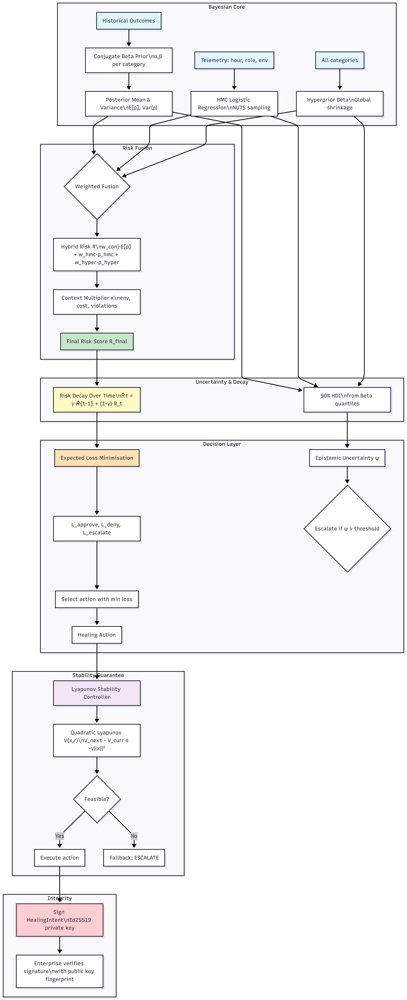

Mathematical Foundations¶
This document describes the Bayesian mathematics underlying the ARF Core Engine’s risk scoring.
The canonical definition of the risk score used throughout this specification is the posterior mean of the conjugate Beta distribution, optionally blended with HMC and hyperprior components as described below.
Canonical reference: See
core_concepts.mdfor the definition ofRiskScore.
Implementation status: The mathematics defined here are implemented in the proprietary core engine.
The engine is access‑controlled and available under outcome‑based pricing.
Mathematical Foundations at a Glance¶

1. Conjugate Beta‑Binomial Model (Online Learning)¶
For each action category \(c \in \mathcal{C}\), we maintain a Beta posterior:
where \((\alpha_c, \beta_c)\) start from expert‑elicited priors. Upon observing a binary outcome \(y \in \{0,1\}\) (\(y=1\) = failure), we update:
The predictive mean \(\mathbb{E}[p_c] = \frac{\alpha_c}{\alpha_c + \beta_c}\) provides the baseline risk. The posterior variance:
allows us to construct credible intervals (e.g., 90% HDI) and express uncertainty.
Choice of Priors: To encode domain expertise, we use informative priors that are pessimistic for high‑impact categories (e.g., database modifications: \(\alpha=1.5, \beta=8.0\) gives prior mean \(\approx 0.16\)). This counteracts optimism bias and ensures safe early decisions.
2. Hamiltonian Monte Carlo for Offline Pattern Discovery¶
Complex interactions (time‑of‑day, user role, environment) are captured by a logistic regression with HMC sampling:
We place weakly informative priors on coefficients, e.g., \(\beta_j \sim \operatorname{Normal}(0, 1)\). The posterior is sampled using the No‑U‑Turn Sampler (NUTS) implemented in PyMC. The resulting posterior over coefficients gives us not only point estimates but also full uncertainty about predictions, which we propagate into the final risk.
Why HMC? HMC efficiently explores high‑dimensional parameter spaces, avoids random‑walk behavior, and yields effective sample sizes orders of magnitude higher than Metropolis‑Hastings. This is critical for learning from sparse historical data.
3. Hierarchical Hyperpriors (Shrinkage)¶
To share statistical strength across categories, we introduce a hierarchical Beta model:
with global hyperparameters \(\alpha_0, \beta_0 \sim \operatorname{Gamma}(2,1)\). This model is fit via variational inference (SVI) in Pyro, yielding posterior summaries for each category that are shrunk toward the global mean. The hyperprior contribution is weighted by data availability:
where \(n\) is the total number of outcomes.
4. Hybrid Risk Fusion¶
The final risk \(R\) for a given intent is a weighted combination:
Weights are dynamic, with caps and interactions as implemented in the core engine:
with \(n_0 = 1000\) and \(n_{\text{hyper}} = 100\) as defaults. The final risk is then multiplied by a context factor \(\kappa(\text{env}, \text{cost}, \text{violations})\) to account for external factors.
Note: The HMC weight is capped at 0.6, and the hyperprior weight is further capped at 0.3 and reduced proportionally when HMC weight is high, ensuring the three weights always sum to 1.
5. Uncertainty Quantification¶
Every risk prediction includes a 90% highest density interval (HDI) computed via:
- For conjugate part: quantiles of Beta distribution.
- For HMC part: posterior predictive samples.
- For hyperprior part: quantiles from variational posterior.
These intervals are displayed in the frontend and used to trigger human‑in‑the‑loop escalation when uncertainty is high (e.g., interval width \(>0.3\)).
6. Expected Loss Minimisation¶
The risk score feeds into the governance loop’s expected loss calculation.
6.1 Risk Decay Across Evaluations¶
To provide temporal stability and avoid single‑session outliers from dominating decisions, the core engine applies exponential smoothing to the raw risk score:
where \(\gamma = 0.9\) (configurable via RISK_DECAY_FACTOR), \(R_t\) is the hybrid risk score from Section 4, and \(\tilde{R}_t\) is the decayed risk used in the loss formulas below. For the first evaluation, \(\tilde{R}_0 = R_0\).
6.2 Expected Loss Formulas¶
The expected loss for each possible action is:
where:
- \(\tilde{R}\) = decayed risk (Section 6.1)
- \(\text{Var}(p_c)\) = posterior variance from the conjugate model
- \(\psi_{\text{mean}}\) = epistemic uncertainty composite
- \(b_{\text{mean}}\) = estimated revenue loss from business impact
- \(v_{\text{mean}}\) = estimated opportunity value of the action
- \(\text{COST\_*}\) are constants defined in
constants.py(seegovernance.md)
6.3 Optional CVaR for Tail Risk (Enterprise)¶
The core engine uses standard expectation for \(L_{\text{approve}}\). The enterprise layer may enable Conditional Value at Risk (CVaR) to penalise tail risks. When enabled (USE_CVAR = True, \(\alpha = 0.05\)), the approve loss becomes:
where \(\tilde{p}\) are posterior samples of the failure probability (drawn from \(\text{Beta}(\alpha_c, \beta_c)\)), and \(\text{CVaR}_\alpha\) is the average of the worst \(\alpha\) fraction of the per‑sample losses.
7. Lyapunov Stability for Healing Actions¶
The LyapunovStabilityController provides a stability guarantee for the healing loop under discrete‑time nonlinear dynamics. It ensures that selected actions drive the system toward a desired equilibrium while reducing a Lyapunov candidate function.
7.1 System Model¶
Let \(x_t \in \mathbb{R}^n\) be the system state at time \(t\) (e.g., resource usage, latency, error rates), and \(u_t \in \mathbb{R}^m\) the healing action (e.g., scaling, restart, rollback). The dynamics are:
with \(f\) known or approximated from telemetry. The risk score \(r_t = \text{RiskScore}(x_t)\) is a function of the state.
7.2 Lyapunov Candidate Function¶
We define a quadratic Lyapunov candidate:
where:
- \(\alpha, \beta > 0\) are weighting coefficients (default \(\alpha = \beta = 1.0\))
- \(x_{\text{des}}\) is the desired equilibrium state (e.g., nominal operating point)
- \(\|\cdot\|\) is the Euclidean norm
This function is positive definite: \(V(x, r) = 0\) iff \(r = 0\) and \(x = x_{\text{des}}\), and \(V > 0\) otherwise.
7.3 Stability Constraint¶
For asymptotic stability, we require the Lyapunov function to decrease along trajectories, with a decay proportional to the state norm:
where \(\gamma > 0\) (default \(\gamma = 0.1\)) controls the convergence rate. This is a discrete‑time version of the Lyapunov decrease condition.
7.4 Action Selection with Stability Guarantee¶
Given current state \(x_t\) and risk \(r_t\), the controller solves:
If a feasible \(u_t\) exists, it is executed. Otherwise, a conservative fallback (e.g., ESCALATE) is triggered.
7.5 Stability Result¶
For any sequence of actions satisfying the constraint, the closed‑loop system satisfies:
provided the dynamics \(f\) are Lipschitz and the risk function \(r(\cdot)\) is continuous. This gives a local, asymptotic stability guarantee under the model assumptions.
7.6 Integration with Governance Loop¶
The stability controller is invoked after expected loss minimisation when a healing action (e.g., APPROVE with an action parameter) is selected. If no stabilizing action exists, the loop forces ESCALATE, adding a safety layer beyond the probabilistic risk assessment.
8. Cryptographic Integrity of HealingIntents (Light Reference)¶
Status: Work in progress – basic signing and verification implemented; advanced key management and rotation planned.
To ensure tamper‑proof transport of HealingIntent from the Python core engine to the Rust‑based enterprise execution layer, ARF uses Ed25519 signatures (via ed25519_dalek). The same mechanism can be extended to audit logs and license validation.
8.1 Signing Flow (Python Core)¶
- A
HealingIntentis serialised into canonical JSON excluding thesignatureandpublic_key_fingerprintfields. - The JSON string is signed using an Ed25519 private key (or RSA, but Ed25519 is preferred for the enterprise boundary).
- The signature (base64) and public key fingerprint (hex of the 32‑byte public key) are attached to the intent.
8.2 Verification Flow (Rust Enterprise)¶
- The Rust execution engine receives the
IntentPayload(equivalent toHealingIntent). - It recomputes the canonical JSON (again excluding signature/fingerprint).
- Using the public key fingerprint, it retrieves or decodes the public key.
- The signature is verified with
verify_strict(). Failure rejects the intent.
8.3 Security Properties¶
- Integrity: Any modification of the intent fields invalidates the signature.
- Authenticity: Only the holder of the private key can produce valid signatures.
- Non‑repudiation: Signatures are cryptographically verifiable by third parties.
8.4 Implementation Notes¶
- Core engine (
healing_intent.py) usescryptography.hazmat(RSA also available; Ed25519 used in enterprise boundary). - Enterprise engine (
arf_execution/src/crypto.rs) usesed25519_dalek. - Future work: key rotation, HSM integration, signed audit trails, and license validation.
9. References¶
- Gelman, A., Carlin, J. B., Stern, H. S., Dunson, D. B., Vehtari, A., & Rubin, D. B. (2013). Bayesian Data Analysis (3rd ed.). CRC Press.
- McElreath, R. (2020). Statistical Rethinking: A Bayesian Course with Examples in R and Stan. CRC Press.
- Hoffman, M. D., & Gelman, A. (2014). The No‑U‑Turn Sampler: Adaptively Setting Path Lengths in Hamiltonian Monte Carlo. Journal of Machine Learning Research, 15(1), 1593–1623.
- Khalil, H. K. (2002). Nonlinear Systems (3rd ed.). Prentice Hall. (For Lyapunov stability theory)
10. See Also¶
core_concepts.md– canonical definition ofRiskScoreand execution laddergovernance.md– governance loop flow and configuration constantsdesign.md– architectural decisions and trade‑offs